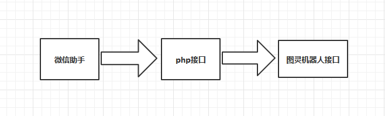
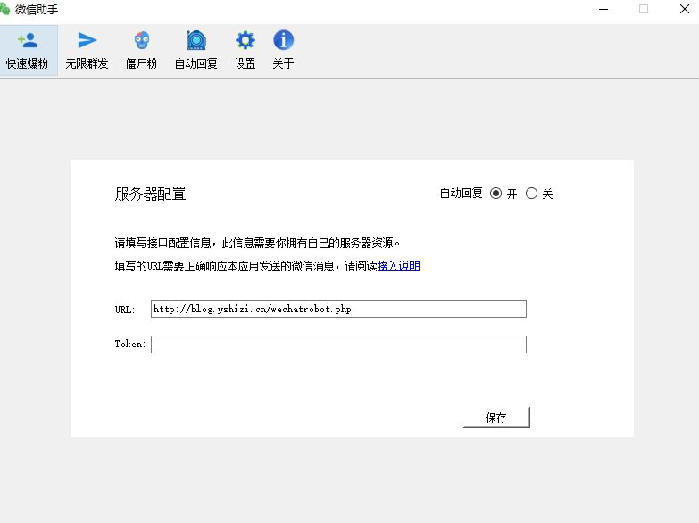
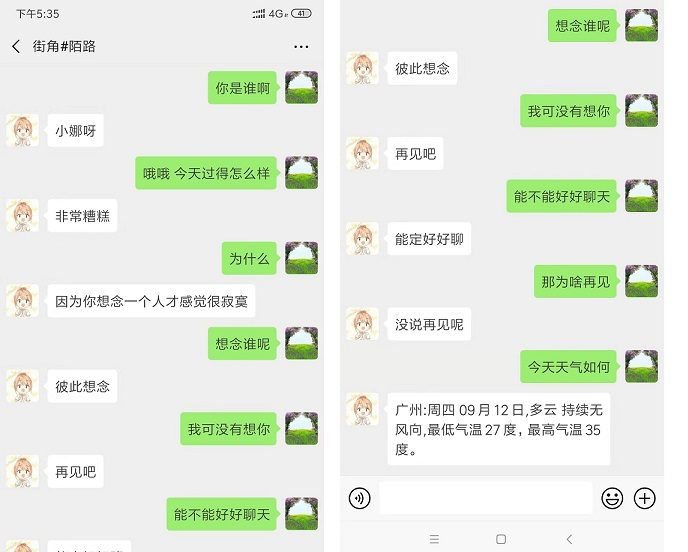

之前通过hook技术实现了微信pc端发送消息功能，如果在结合图灵机器人就能实现微信聊天机器人。
代码下载：http://blog.yshizi.cn/131.html
逻辑如下：

下面我简单介绍一下步骤。
使用php实现访问图灵机器人api。
php实现代码如下：
<?php
class Tuling123
{
private $apiKey;
private $secret;
private $text;
private $userId = 1;
private $selfInfo = '';
public function __construct($apiKey, $userId, $selfInfo){
$this->apikey = $apiKey;
$this->secret = $secret;
$this->userId = $userId;
$this->selfInfo = $selfInfo; }
public function tuling($text, $raw = false){
$this->text = $text;
$param = [
'perception' => [
'inputText' => [
'text' => $this->text,
],
'selfInfo' => $this->selfInfo
],
'userInfo' => [
'apiKey' => $this->apikey,
'userId' => $this->userId,
]
];
$result = json_decode('['.$this->post('http://openapi.tuling123.com/openapi/api/v2',json_encode($param)).']',true);
return $raw ? $result : $result[0]['results'][0]['values']['text'];}
private function post($url,$data){
$curl = curl_init();
curl_setopt($curl, CURLOPT_POST, 1);
curl_setopt($curl, CURLOPT_HEADER, 0);
curl_setopt($curl, CURLOPT_POSTFIELDS, $data);
curl_setopt($curl, CURLOPT_RETURNTRANSFER, true);
curl_setopt($curl, CURLOPT_TIMEOUT, 500);
curl_setopt($curl, CURLOPT_SSL_VERIFYPEER, true);
curl_setopt($curl, CURLOPT_SSL_VERIFYHOST, 2);
curl_setopt($curl, CURLOPT_URL, $url);
$result = curl_exec($curl);
curl_close($curl);
return $result; }
}
?>
TuLing.php
这段代码主要是封装图灵机器人api
<?php
require __DIR__.'/TuLing.php';
/**
* 获取 post 参数; 在 content_type 为 application/json 时，自动解析 json
* @return array
*/
function initPostData()
{
if (empty($_POST)) {
$content = file_get_contents('php://input');
$post = (array)json_decode($content, true);
} else {
$post = $_POST;
}
return $post;
}
$selfInfo = [
'location' => [
'city' => '广州'
]
];
header('Content-Type:application/json');
$post = initPostData();
$userid=$post['wxid'];
$content=$post['content'];//str_replace("","","$userid") 将去除""的微信id作为图灵机器人的用户id,因为图灵机器人用户id不能含""
$data = new Tuling123('您的图灵机器人apikey',str_replace("","","$userid"),$selfInfo);
$result = $data->tuling($content);
$json['wxid'] = $userid;
$json['content'] = $result;
echo json_encode($json,JSON_UNESCAPED_UNICODE);
?>wechatrobot.php
之前将这两个文件发布服务器。发布之后的wechatrobot.php文件访问地址即使微信助手接口地址。
如我的发布后地址是：http://blog.yshizi.cn/wechatrobot.php
微信助手配置如下：

然后就可撩机器人。
